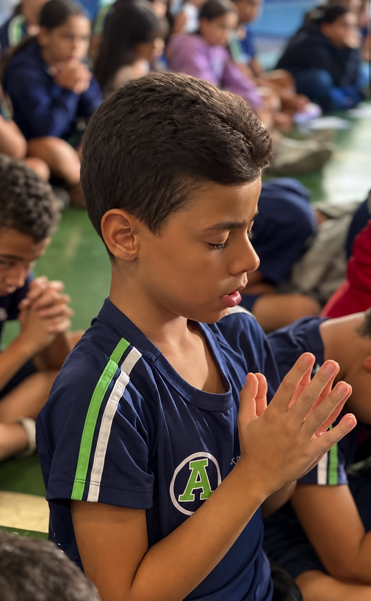
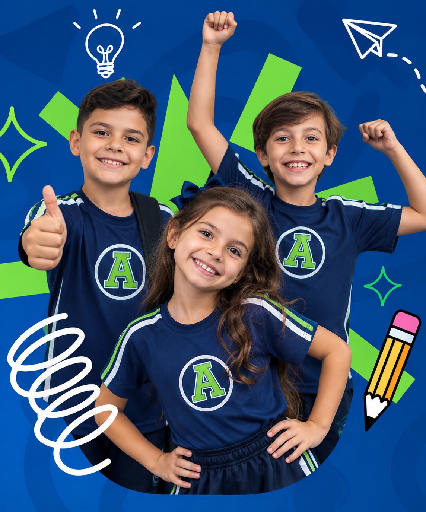
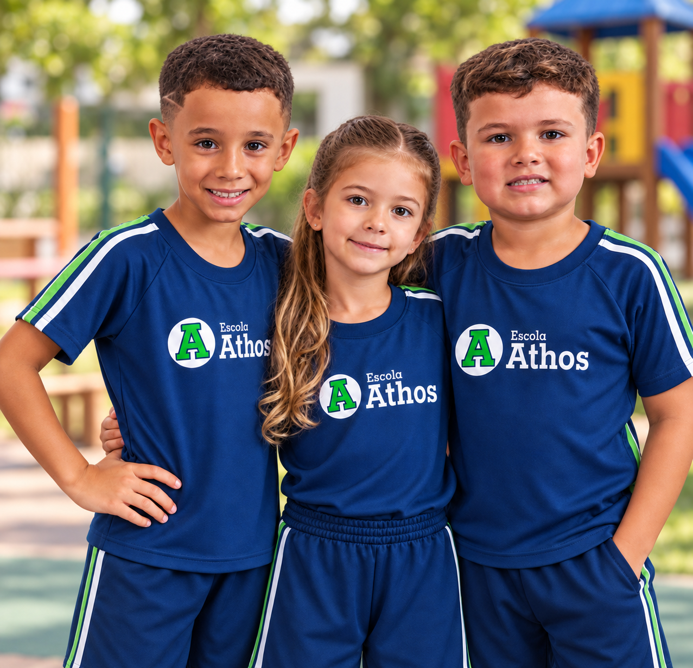
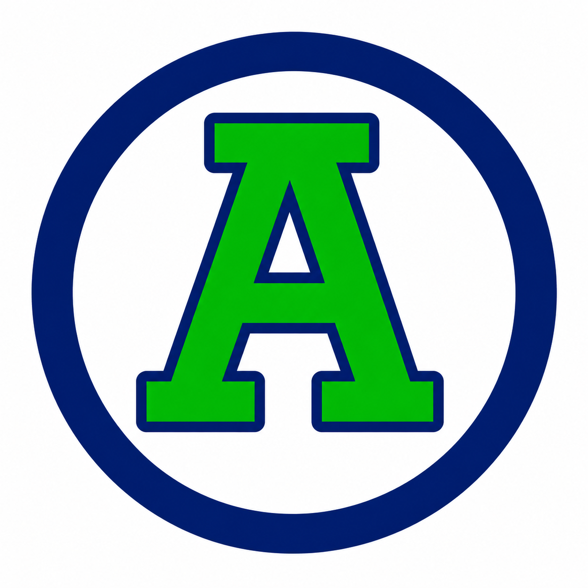
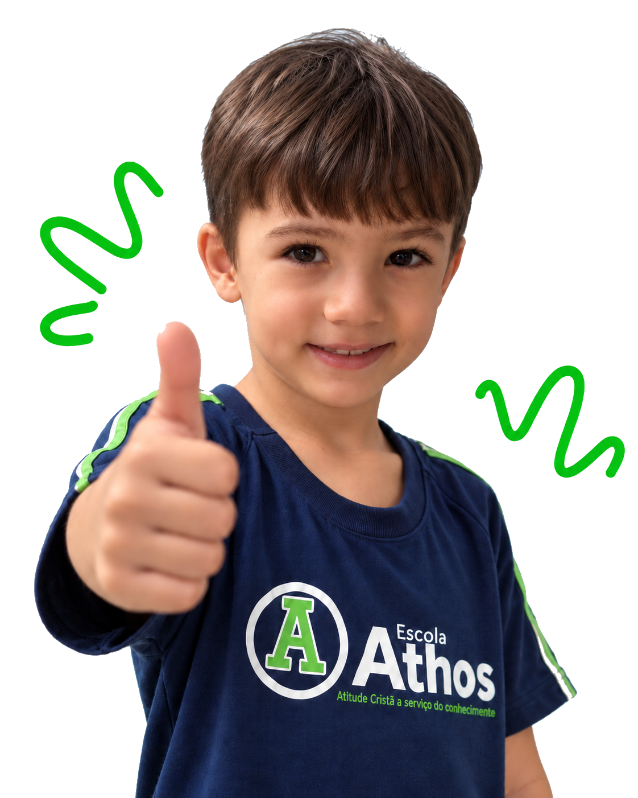

Atenção próxima
e individualizada
Turmas que permitem um acompanhamento real do desenvolvimento.
Conhecimento, valores e cuidado em cada etapa
do desenvolvimento.
No Escola Athos, formamos pessoas
com valores, conhecimento e confiança
para ir mais longe.
Na Escola Athos, acreditamos em uma educação que une conhecimento, formação cristã e acolhimento. Cada criança é única, e nosso compromisso é caminhar junto com cada família em todas as fases do desenvolvimento.
Agendar uma visita à Escola
Turmas que permitem um acompanhamento real do desenvolvimento.
Princípios que orientam escolhas, atitudes e relacionamentos.
Um espaço onde cada aluno se sente parte e pode ser quem realmente é.
Muito além do conteúdo, preparamos para os desafios da vida.

Cada etapa pede um olhar diferente. Por isso, a Athos acompanha o aluno desde os primeiros aprendizados até o 9º ano, respeitando seu ritmo, desenvolvimento e novos desafios.
Descoberta, cuidado, convivência e os primeiros aprendizados.
Conhecer esta etapa →Mais conhecimento, responsabilidade e preparação para novos desafios.
Conhecer esta etapa →
Mais do que aulas, vivências que estimulam talentos, valores e habilidades para a vida.
Quero inscrever meu filho →“Espaço reservado para o depoimento autorizado da Família Almeida, preservando a apresentação visual da seção.”

“Espaço reservado para o depoimento autorizado da Família Barbosa, preservando a apresentação visual da seção.”
“Espaço reservado para o depoimento autorizado da Família Carvalho, preservando a apresentação visual da seção.”
“Espaço reservado para o depoimento autorizado da Família Dias, preservando a apresentação visual da seção.”
“Espaço reservado para o depoimento autorizado da Família Ferreira, preservando a apresentação visual da seção.”
“Espaço reservado para o depoimento autorizado da Família Gomes, preservando a apresentação visual da seção.”
“Espaço reservado para o depoimento autorizado da Família Lima, preservando a apresentação visual da seção.”
“Espaço reservado para o depoimento autorizado da Família Martins, preservando a apresentação visual da seção.”
“Espaço reservado para o depoimento autorizado da Família Moreira, preservando a apresentação visual da seção.”
“Espaço reservado para o depoimento autorizado da Família Oliveira, preservando a apresentação visual da seção.”
“Espaço reservado para o depoimento autorizado da Família Pereira, preservando a apresentação visual da seção.”
“Espaço reservado para o depoimento autorizado da Família Rocha, preservando a apresentação visual da seção.”
“Espaço reservado para o depoimento autorizado da Família Santos, preservando a apresentação visual da seção.”
“Espaço reservado para o depoimento autorizado da Família Souza, preservando a apresentação visual da seção.”
“Espaço reservado para o depoimento autorizado da Família Vieira, preservando a apresentação visual da seção.”

Agende uma visita e venha conhecer nossa estrutura, equipe e proposta pedagógica.